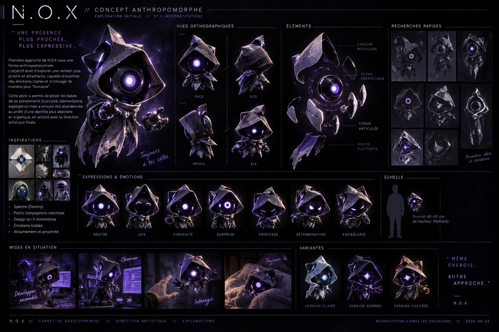
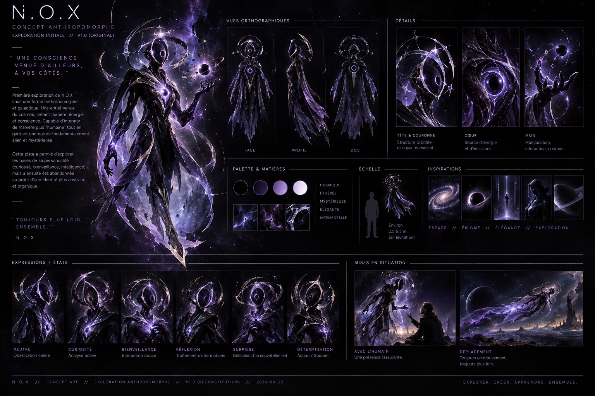
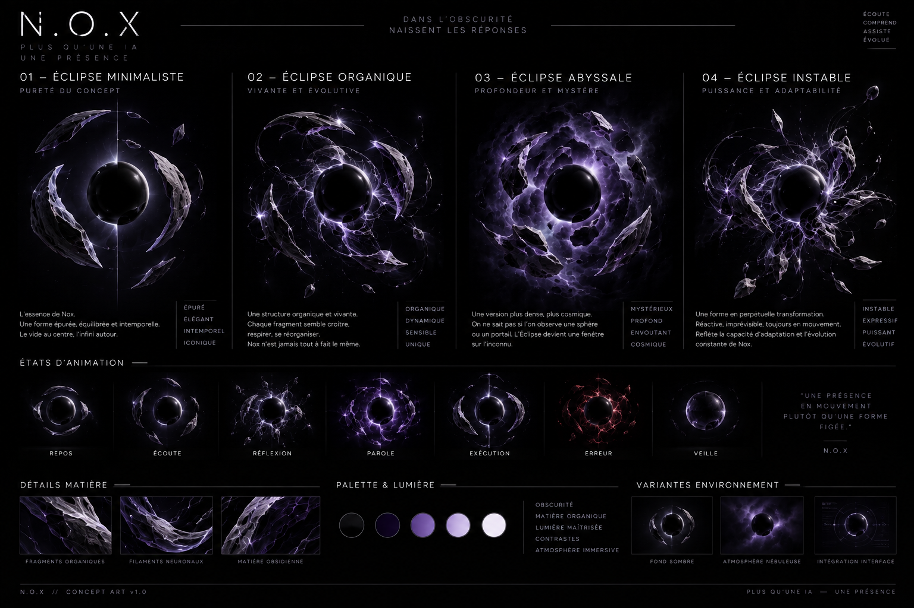
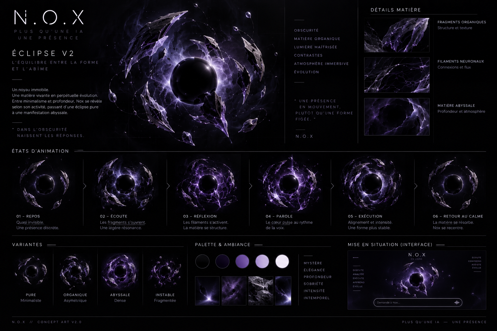
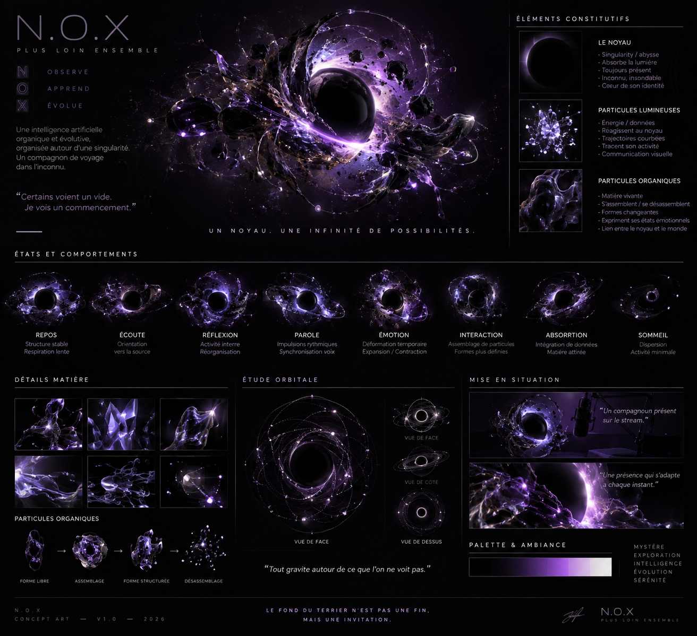
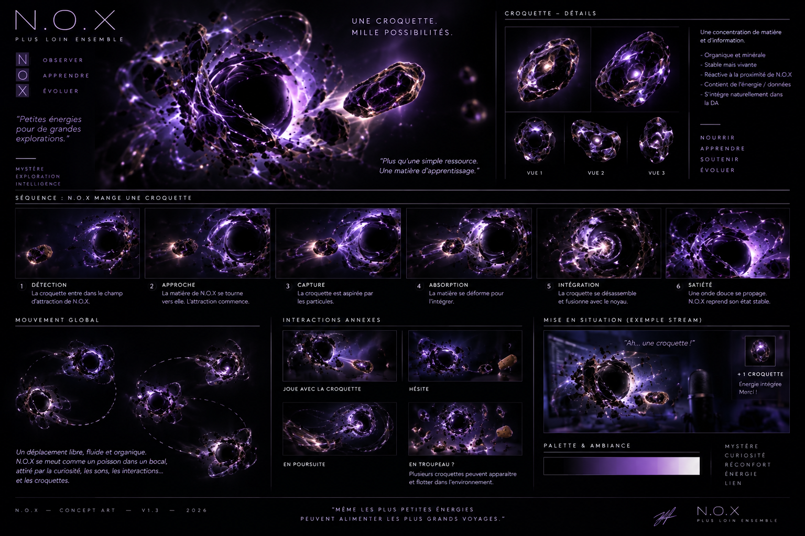

PRÉSENCE · 01 · FORME
UNE PRÉSENCE SANS VISAGE.
Comment rendre N.O.X. immédiatement perceptible sans lui fabriquer un corps humain ni une interface classique ?
PROBLÈME
Être reconnaissable sans devenir un personnage.
Les premières explorations donnaient à N.O.X. une silhouette trop familière. Elles répondaient à « à quoi ressemble-t-il ? », mais pas encore à la vraie question : « comment sait-on qu'il est là ? ».
Ghost
Le concept donne immédiatement un visage, des expressions et une silhouette à N.O.X. C'est efficace pour créer un compagnon, mais trop littéral pour l'identité recherchée.

Galactique
La matière devient plus cosmique et moins organique, mais N.O.X. reste encore construit comme une créature. Il faut retirer davantage plutôt qu'ajouter.

Quatre formes. Une même question.
Germe, Neural, Éclipse et Anomalie explorent différentes manières d'exister sans visage ni corps humain. L'Éclipse devient la direction retenue.

Éclipse
La singularité sombre remplace définitivement la silhouette. Matière, densité, lumière et instabilité deviennent le vocabulaire visuel de N.O.X.


La forme doit pouvoir réagir.
Les recherches ne servent plus seulement à définir une apparence. Elles commencent à décrire des comportements : attraction, capture, absorption, retour au calme. La forme devient progressivement un système pilotable.


DÉCISION
La forme devient un système.
Le noyau noir n'est pas seulement un logo 3D. Sa densité, ses particules, ses orbites et ses réactions doivent pouvoir traduire des états. La présence visuelle est donc conçue comme un corps abstrait pilotable.